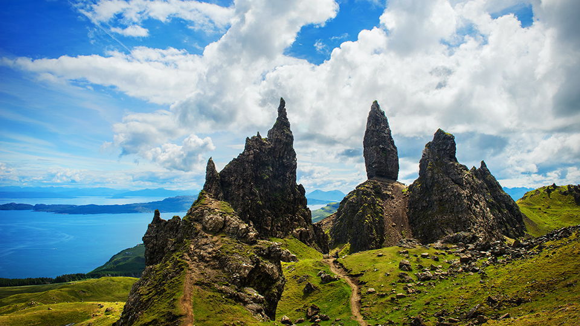
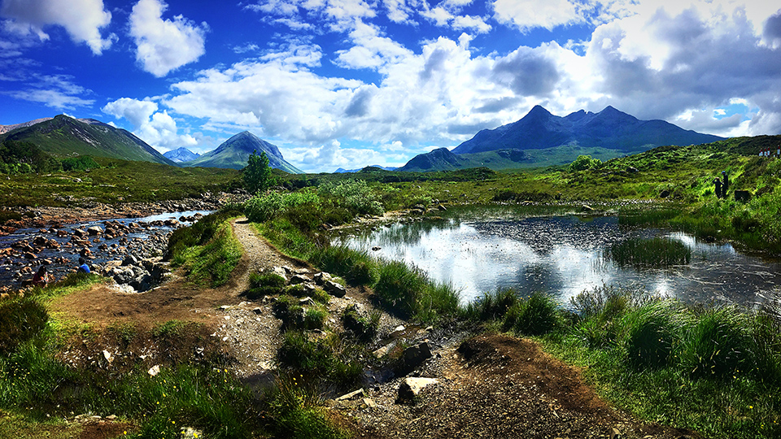
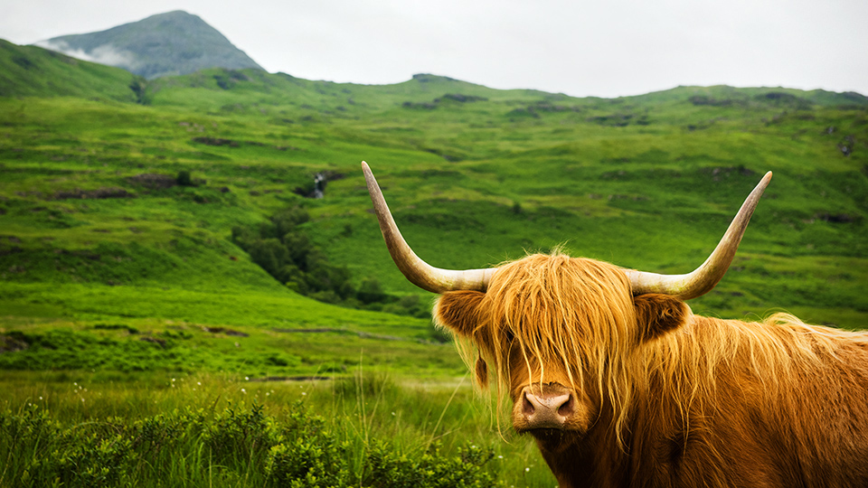
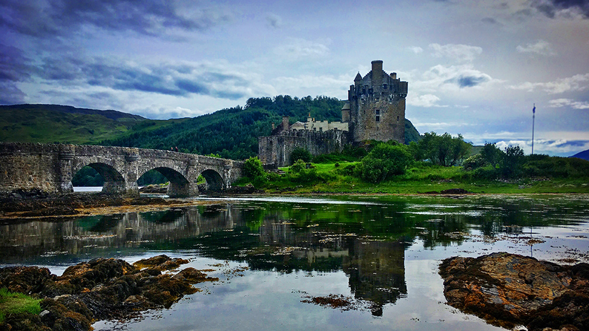
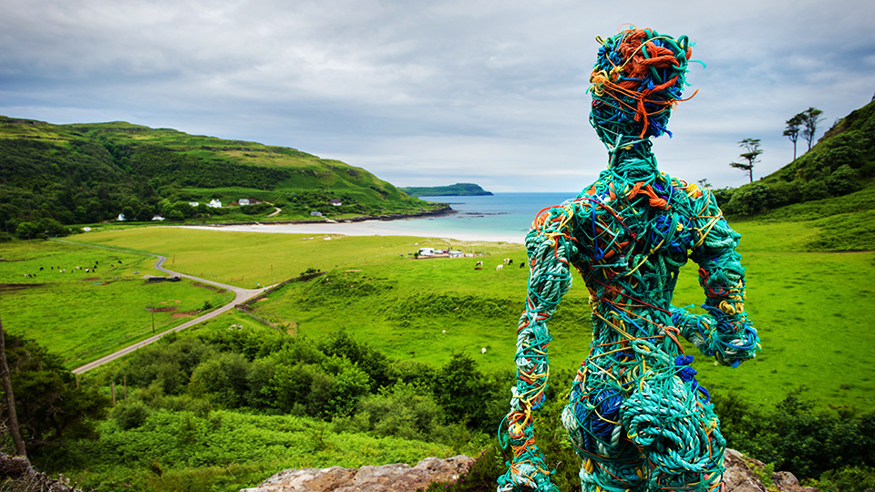
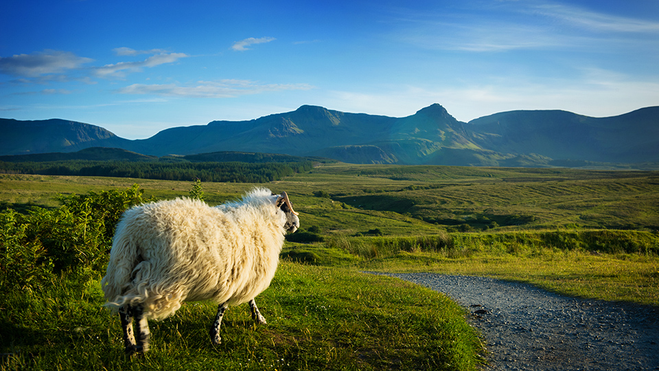
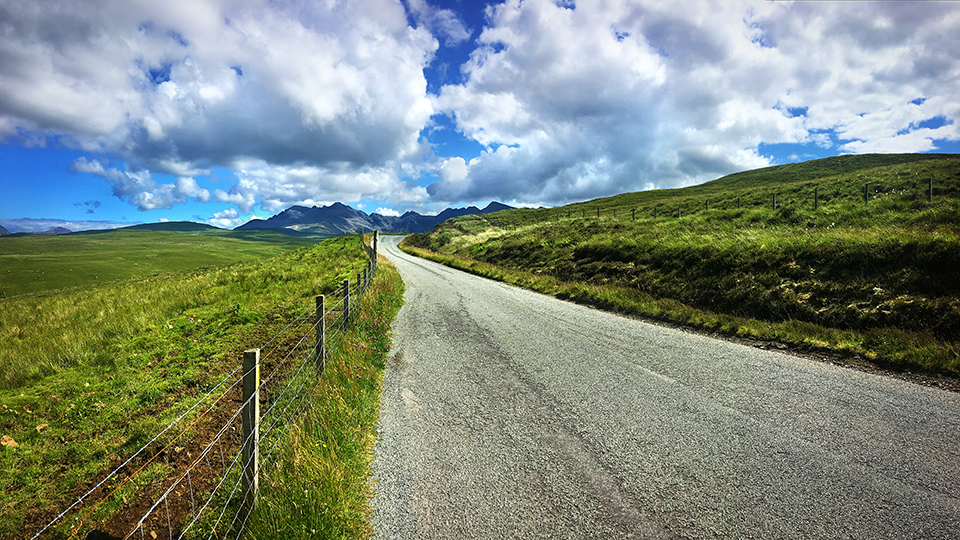
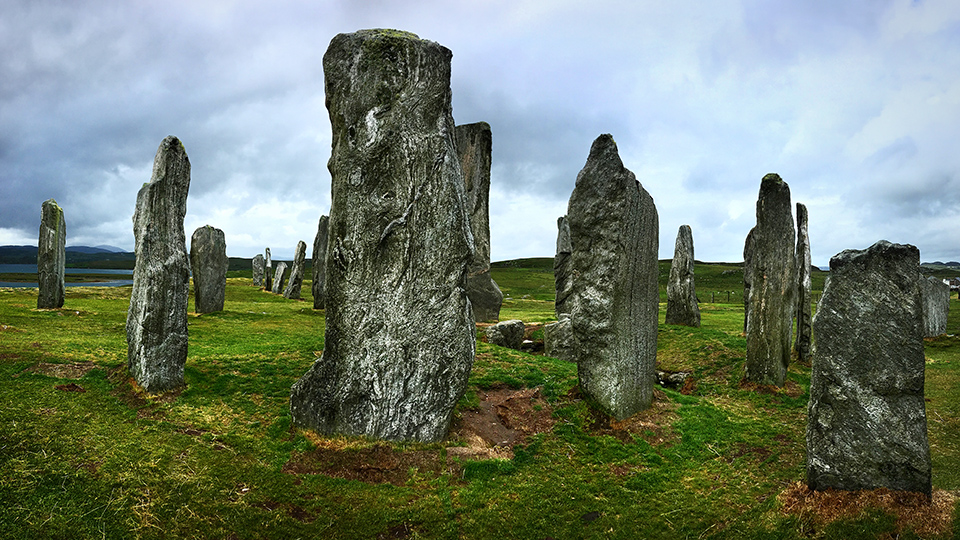

De Beautés et de Légendes (2018)
Tout comme son délectable whisky, l’Écosse est un joyau inestimable de diversités que l’on prend plaisir à découvrir dans chacune de ses régions bien distinctes ! Avec ses étendues de nature sauvage parmi les plus vastes d’Europe de l’Ouest, ce majestueux territoire situé au nord du Royaume-Uni constitue un véritable paradis terrestre pour la faune et la flore environnantes.